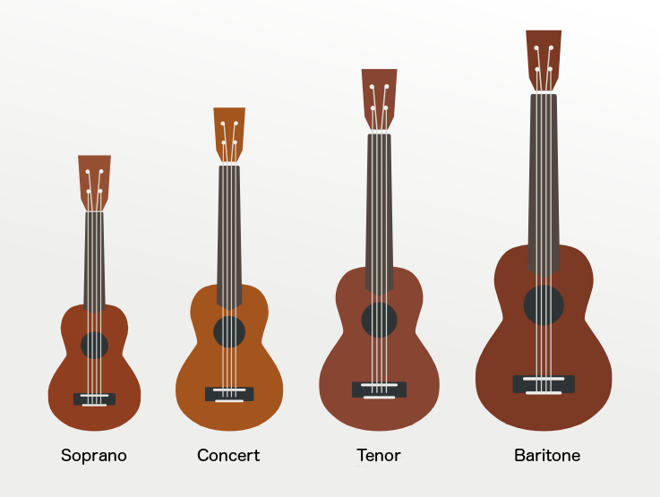
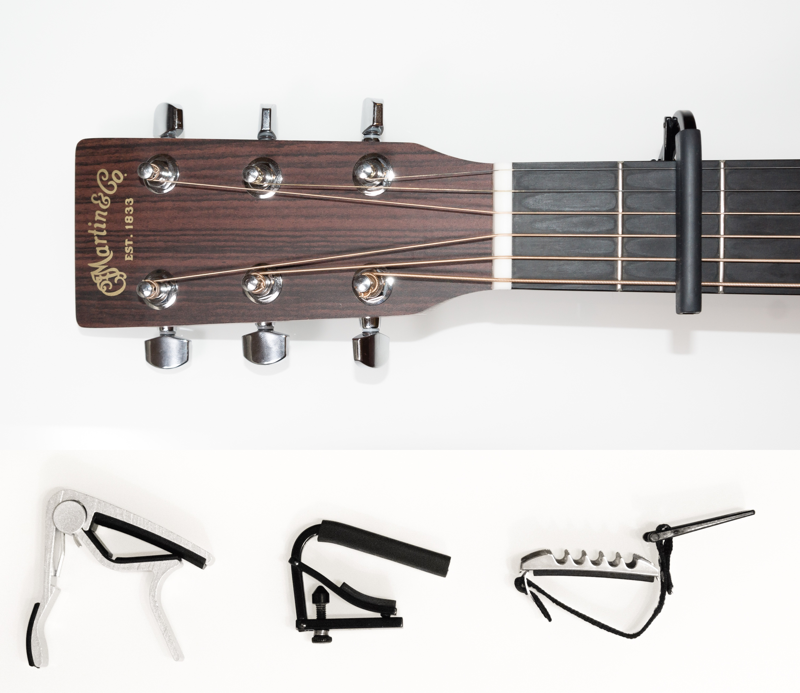

How to chose your ukulele?
There are 4 main ukulele sizes, from soprano to baritone. If you really want to hear the typical fruity sound of a Ukulele you should go to a soprano but concert & tenor can be easier to begin as you will have more place for your fingers in the fretboard.
Our advices : don't buy too cheap ukulele (under 50$) if you can, they will be harder to tune and you may hear some buzz. Go to your local store to test it or look at our recommandations bellow.
Note that you will be able to change the strings easily (you can buy Aquila strings for instance) but if you choose a ukulele with good strings you will only focus on your learning
The very basics of ukulele strings
Ok now you bought your ukulele, time to make it sound good !
There are many ways to tune your ukulele, but the more common tuning is G C E A (up strings to down). For the first month you can keep it tuned like this(note that you will have to check regularly the tuning, especially at the beginning if your ukulele is new). Then you can change the tuning especially sometime to better adjust with your voice.
Tune your ukulele with a tuner
Many will say that you should learn to tune your uke by ears. I agree that you will have to quickly be able to hear if your uke is in tune or not, but for the beginning we definitively encourage you to use a tuner.
There are many tuners available but we hardly suggest you to buy a physical tuner that you will leave on the head on your ukulele. The precision is often better and it's always on your uke, ready to be used. If you don't have a tuner don't worry, there are many great apps on smartphone or you can even use online tuner.
In all the case the process are the same : you pick one string at a time and turn the corresponding tuning key until the correct letter is displayed on your tuner. For instance if you strum the first string of your uke and the letter D is displayed, you will turn it until you see E, then F and finally G.
Follow the same process for the second string with C, the third string with E and the fourth string with A.
If your ukulele correctly display GCEA but the sound is different than the exemple here, it's maybe that some string is not sufficiently stretched. Don't forget that the chords are in a loop ABCDEFGABCD.... so you may have the wrong C for instance. In this case turn it to C -> D -> E -> F -> G -> A -> B -> C. Always check all your strings, if you turn to hardly a string it may break, if it happens it's not a big deal, ukulele strings are easy to change.
Free Ukulele tuners :
Learn to strum your first chords
Your first chords
There are hundreds of chords, but to begin you only need few. If you want to learn your first song, you should begin with theses 4 chords : C, Am, F, G. They are quite easy, even if the G chord can be more challenging for a beginner. You will have to learn them and be able to strum them without looking your ukulele.
To strum use your thumb or your index (index is recommended). Strum the strings from the top to the bottom. It should sound like this :
Your first strumming pattern
Your ukulele is in tune, and now you know how to strum 4 chords with a down movement : But when you find tablature on the net you also need one more magic ingredient : the strumming pattern !
There are a lot of different strumming pattern, a easy one will look like this : you play this 4 movements on each chords.
Exemple of patterns :
When you will be sufficiently confident with your ukulele you will learn to find yourself the best strumming you like. Before this we encourage you to use the strumming pattern we advise with the songs. You will see that often the same patterns will be used for different songs.
A typical ukulele pattern you should learn quickly is the "calypso pattern". You will see that this pattern fits really well with a lot of songs (the jungle book, bruno mars songs, ...)
This pattern is
Do I need a capo?

A capo is a small piece that you will use to pinch the 4 strings of your ukulele. As it is very cheap (around 5$) you really should buy one. But if you don't have one don't worry, the capo will mainly help you to sing with the song. Even without it you can play songs that encourage you to use a capo.
How to sing while playing?
Singing while playing can be challenging as you will see that the melody of the song is different than the strumming you play. You won't be able to sing directly when you are learning a new song.
Our advice is :
- Practice chords change until you can play them without looking at your ukulele and without thinking about it.
- Pratice the strumming pattern again and again (you can mute song with your left hand if you don't want to annoy the others).
- Learn the song lyrics and flow with youtube, spotify or itune.
Then after a few day you will see that magic happen and you will be able to learn and sing at the same time. If your next song use the same chords and the same strumming pattern you will be able to play it in no time.